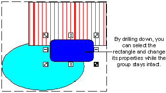
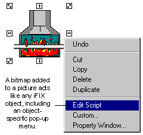

The object-oriented nature of pictures
Many graphics programs work by giving you tools to manipulate pixels, a series of tiny dots that make up your computer monitor. When you add shapes to your drawing, the program translates these shapes into a matrix of dots, and changes the color of the screen pixels to match the dot matrixes. These dot matrixes are called bitmaps.
Although bitmaps are a common graphic format, they are limited in that once you create the image, there is very little you can do to change it. You can erase or partially erase a bitmap, or paint a new bitmap on top of the old one. But changing bitmaps takes almost as much time as creating them.
DeltaV Operate pictures, on the other hand, work with objects instead of individual pixels. An object-oriented graphic consists of an image and image attributes, such as size, color, and position, that define the properties of the object. By providing this object-oriented foundation, DeltaV Operate precludes your having to work with individual pixels. Rather, you interact with tools, menus, and dialog boxes to add and change object properties, while DeltaV Operate automatically adjusts the object and its property data for you. This gives you an enormous amount of control and flexibility when drawing and modifying your pictures.
The following figures illustrate some additional examples of the control and flexibility you have with DeltaV Operate pictures.
|
The Control You Have With Your Pictures |
|
|---|---|
|
In a picture, you can modify specific objects of a group without separating the objects from the group, and without losing scripts or animations applied to the group. This concept is referred to as drilling down. |
 |
|
The Flexibility You Have With Your Pictures |
|
|---|---|
|
Given the popularity of bitmap formats, you may have an existing bitmap that you want to add to your picture. DeltaV Operate makes this easy by letting you import the bitmap into a picture as an object. Now you can control the image's properties like any other DeltaV Operate object. For more information on adding a bitmap to a picture, refer to Working with Bitmaps in the topic Working with Other Applications. |
 |
How Objects Behave in Pictures
An object is anything that you create or import into a picture that has properties, methods, and events. In the next section we talk more about how objects work. Once you have created an object in the DeltaV Operate configuration environment, you can control its attributes and view its behavior in the run-time environment.
An object can be any of the following:
Shapes - Shapes are integral to adding precise detail to your pictures. Shapes include rectangles, rounded rectangles, ovals, lines, polylines, polygons, arcs, chords, and pies.
Text - Text added to a picture becomes an object, containing properties that allow you to format or control the text.
Bitmaps - Bitmaps are images constructed of dot matrixes. They can be imported into a picture and controlled like any other object.
Data links - Data links display text and values from process databases.
Alarm Summaries - An Alarm Summary object displays real-time alarm status information based on your alarming configuration. An Alarm Summary object is a DeltaV ActiveX control.
Push Buttons - A push button is a tool that lets you execute an action easily with the click of a mouse.
Timers - Timers perform an action based on a specified time duration.
Events - Events allow you to perform an operation based on a specific action.
Variables - Variables allow you to specify different values that let you store and display process data in various ways.
ActiveX Controls - compiled software components based on the component object model (COM). Any imported ActiveX control (OCX) becomes an object in DeltaV Operate.
Applications - Any OLE-compatible application, such as a Microsoft Excel spreadsheet, can be imported as a document object within DeltaV Operate.
Animations - When you animate an object's properties, DeltaV Operate adds animation objects to the object containing those properties.
A picture can contain many types of objects. The following figure illustrates the concept of objects inside a DeltaV Operate picture.
Objects consist of the following image attributes:
Properties
Methods
Events
These attributes are described in the sections that follow.
Properties
All objects have properties. Properties are object attributes you can control, such as the foreground, fill color or the object's size or position. These properties can be modified by animating the object or by writing a script.
Methods and Events
Objects also contain methods and events.
A method is a task that affects one or more objects. For example, a rectangle can be moved, rotated, and scaled, and these are all methods of the rectangle.
An event is a signal that an object generates that we respond to. For example, if you click the left mouse button or press a key on the keyboard, the object generates an event which you would respond to, typically by executing a script. Note that the action which triggers an event does not have to be a user action, it can be another script, an application, or the operating system.
Typically, when drawing pictures you work with properties more than methods and events. However, you may want to access an object's methods and events in order to write scripts for the objects you create. For more information on properties, refer to Controlling Object Properties.